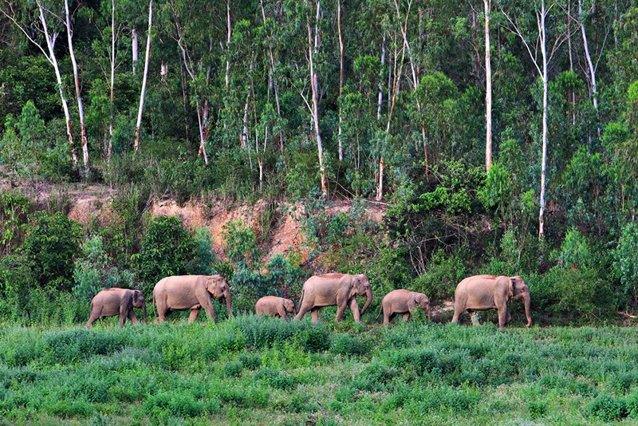

อุทยานแห่งชาติกุยบุรี

อุทยานแห่งชาติกุยบุรี หรือ ผืนป่ากุยบุรี เป็นแหล่งต้นน้ำสำคัญของแม่น้ำกุยบุรีและแม่น้ำปราณบุรี หล่อเลี้ยงชีวิตของผู้คนในจังหวัดประจวบคีรีขันธ์ ได้รับการประกาศให้เป็นอุทยานแห่งชาติ มีวัตถุประสงค์หลักเพื่อคุ้มครองทรัพยากรธรรมชาติที่ปรากฏในพื้นที่ เพื่อเป็นแหล่งหาความรู้ศึกษาวิจัย และการประกอบกิจกรรมนันทนาการของประชาชน
